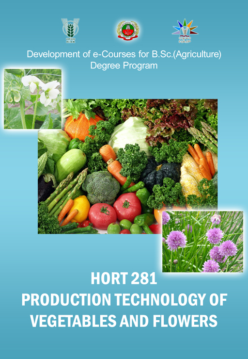

PRODUCTION TECHNOLOGY OF VEGETABLES AND FLOWERS
:: (HORT 281 ) :: Credits 3(2+1)

Select the lecture topic...
Lec 01 -
Importance of Olericulture
Lec 02 -
Vegetable gardens
Lec 03 -
Vegetable classification
Lec 04 -
Tomato
Lec 05 -
Brinjal
Lec 06 -
Bhendi
Lec 07 -
Cucurbitaceous Vegetables
Lec 08 -
Ridge Gourd
Lec 09 -
Ash Gourd
Lec 10 -
Bottle Gourd
Lec 11 -
Bitter Gourd
Lec 12 -
Cole crops – cabbage
Lec 13 -
Cole crops – cauliflower
Lec 14 -
Cole crops – knol-khol
Lec 15 -
Onion
Lec 16 -
Garlic
see more...
Lec 17 -
Peas
Lec 18 -
French beans
Lec 19 -
Cluster beans
Lec 20 -
Hyacinth bean
Lec 21 -
Cowpea
Lec 22 -
Potato
Lec 23 -
Sweet potato
Lec 24 -
Tapioca
Lec 25 -
Colocasia
Lec 26 -
Yams
Lec 27 -
Carrot
Lec 28 -
Radish
Lec 29 -
Turnip
Lec 30 -
Beet root
Lec 31 -
Amaranthus, Palak, Gogu
Lec 32 -
Drumstick,coccinia and curry...
Lec 33-
Importance of ornamental...
Lec 34 -
Types and styles of ornamental
Lec 35 -
Use of trees, shrubs...
Lec 36 -
Rose.
Lec 37 -
Jasmine
Lec 38 -
Chrysanthemum
Lec 39 -
Crossandra,
Lec 40 -
Marygold
Lec 41 -
Tuberose.